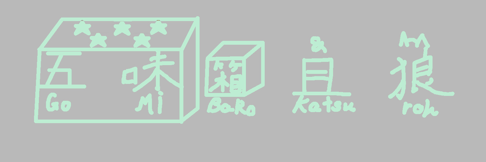
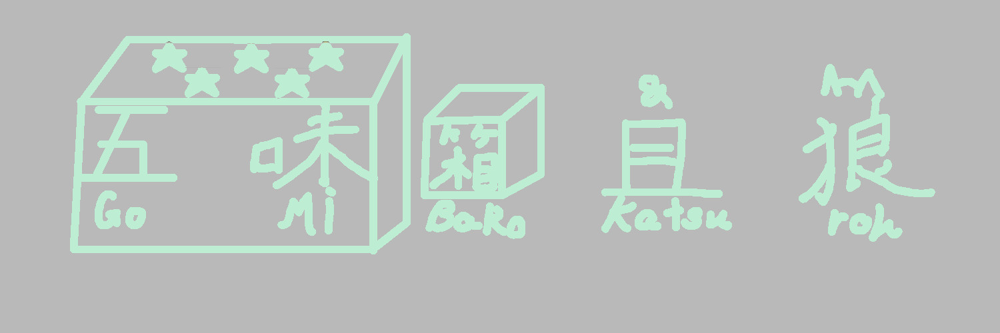

画像

通常版

低解像度版

低視認型
低視認型＆低解像度版
低解像度は容量が少ないかもしれないし、そうじゃないかもしれません。
低視認性は、軍用機、軍艦、戦闘車両等の兵器をレーダー等のセンサー類から探知され難くする軍事技術の総称色が少ないのでいろんなサイトに馴染むかもしれないし、そうじゃないかもしれません。
このサイトを貴方のサイトに掲載する事を検討して頂きありがとうございます。
決まりを作成しましたので(即席)、こちらを遵守してくださる様にお願いします。
通常版
低解像度版

低視認型
低視認型＆低解像度版
低解像度は容量が少ないかもしれないし、そうじゃないかもしれません。
低視認性は、軍用機、軍艦、戦闘車両等の兵器をレーダー等のセンサー類から探知され難くする軍事技術の総称色が少ないのでいろんなサイトに馴染むかもしれないし、そうじゃないかもしれません。